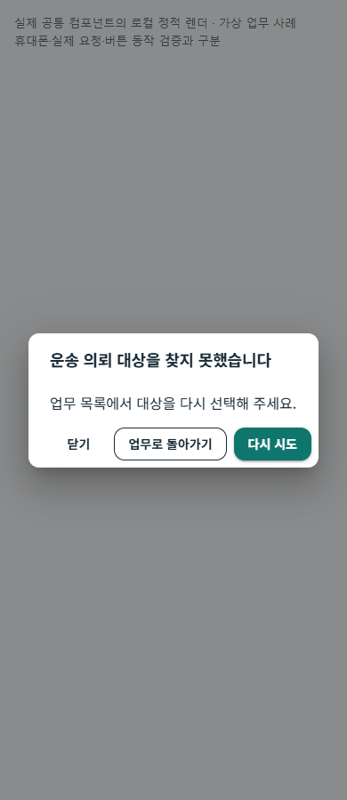
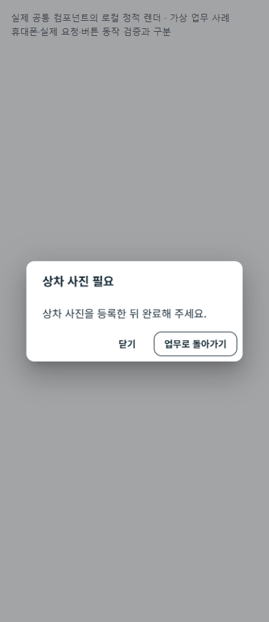
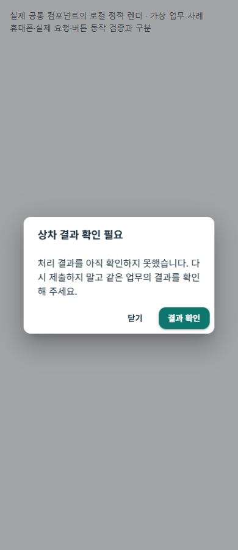
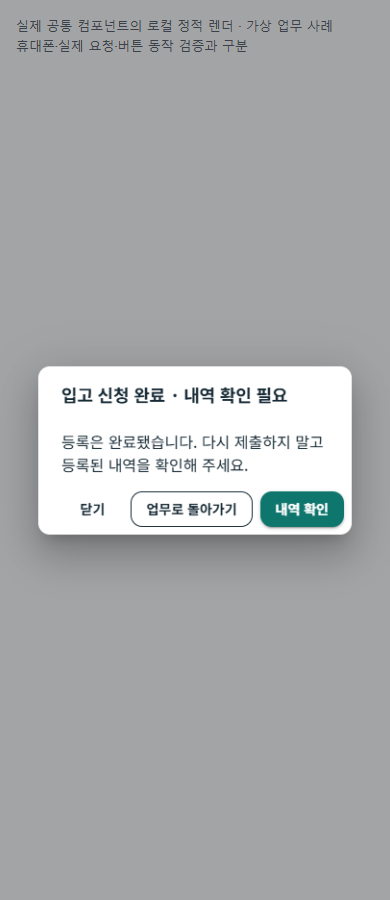
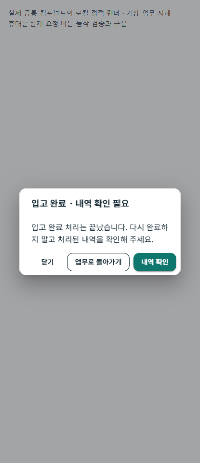
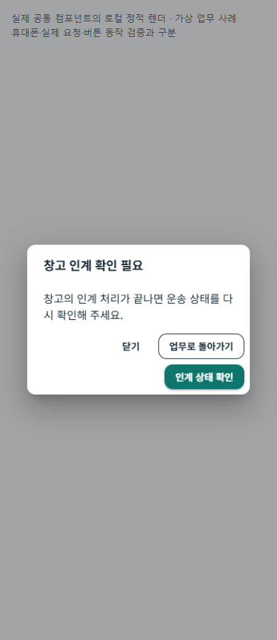

운송 의뢰 조회

닫기 · 업무로 돌아가기 · 다시 시도
현재 공통 다이얼로그 컴포넌트에 가상 업무 사례를 넣어 렌더한 검토 화면입니다.
전체 앱 화면·휴대폰 설치·실제 서버 업무·버튼 동작 검증과 구분합니다. 내부 오류 코드는 화면에 표시하지 않습니다.
저장 응답을 받은 경우와 처리 결과가 아직 확인되지 않은 경우를 구분합니다.

닫기 · 업무로 돌아가기 · 다시 시도

닫기 · 업무로 돌아가기

닫기 · 결과 확인

닫기 · 업무로 돌아가기 · 내역 확인

닫기 · 업무로 돌아가기 · 내역 확인

닫기 · 업무로 돌아가기 · 인계 상태 확인